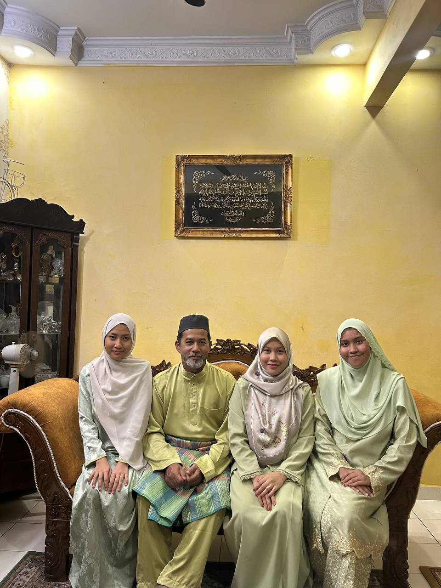
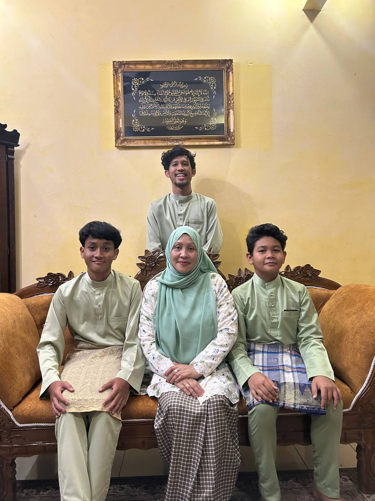

My dad, Mohd Fuzi bin Sarriffulddin, was born on 10 April 1975 in Kuala Krai, Kelantan. He’s the quiet type who doesn’t talk much about himself, but his actions say everything. He loves watching movies, especially action films, and he’s someone who’s very hardworking, responsible, and quite stern—but in a caring way. Even though he’s not very talkative, he’s friendly and always there when needed. My mom, Ramlah binti Che Husain, was born on 15 September 1976 in Machang, Kelantan. She’s a gentle and soft-hearted person who cries easily and spreads kindness wherever she goes. She enjoys gardening and loves online shopping, especially when it comes to buying flowers. She has many friends, rarely gets angry, and is always fun to be around. Despite her gentle nature, she’s also a hardworking woman who fills our home with warmth and happiness.
|  | My eldest sister, Nur Alifah Illyana, was born on 25 September 2001 and is the eldest daughter in our family. She is very hardworking, responsible, and easygoing, making her someone everyone can rely on. During her student days at Politeknik Merlimau, she was a good and dedicated student. She is especially close to our mother and is known for being very friendly, even with older people. Her favourite colour is pink, and she is a great cook who loves baking. As for me, Nur Aisyah Atasya, I am the third sibling, born on 17 February 2005. I’m a quiet and stern person who doesn’t talk much and inherited most of my father’s characteristics. I enjoy spending time with books and movies and prefer calm, peaceful moments. My youngest sister, Nur Aisyah Khadija, is truly the sunshine of our family. She is funny, gentle, and very easygoing, always bringing laughter wherever she goes. She loves baking, trying new things, going out, online shopping, and dressing up. She is currently furthering her studies at UiTM Segamat, Johor, in English for Professional Communication, and despite her cheerful personality, she studies hard and stays focused on her goals. |
|---|
My older brother, M. Luqman Hakim, was born on 20 December 2003 and is honestly the funny one in the family. He’s currently studying Electrical Engineering at Politeknik PD and somehow manages to have manyyy friends wherever he goes. When he’s not studying, he’s either playing games, going out with friends, fishing, or modifying his motorbike—basically always keeping himself busy. My fifth sibling, M. Umair Al-Harith, was born on 1 December 2010. He’s very quiet and shy but surprisingly very smart. He takes games wayyy too seriously, eats a lot, and is especially close to my youngest sibling, making them an inseparable duo. My youngest brother, M. Darwish Ar-Rayyan, Born on is the playful and sporty one. He jokes around with my mom all the time and is the most athletic among all of us. He loves bola sepak, volleyball, and sepak takraw, hates going to school but loves Pendidikan Jasmani. He takes sports events very seriously and is also very clingy, which makes him even more lovable. |
 |
|---|